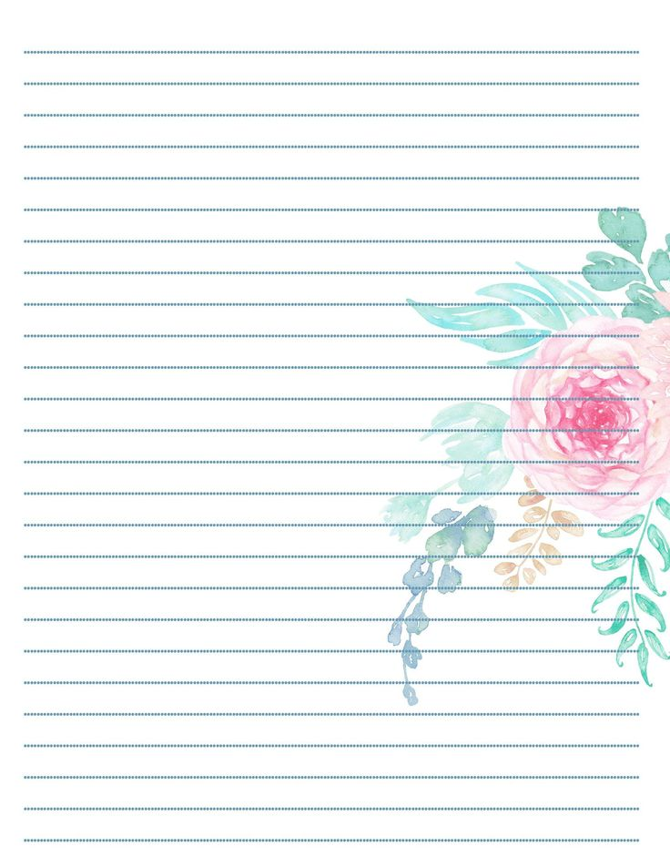
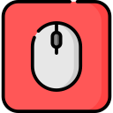

Обо мне
Наши основные услуги
Я есть в ВК
dashke_05 - мой ник. Стараюсь активно вести страницу, чтобы сразу было понятно, что весёлый и активный человек и со мной можно очень интересно и весело пообщаться.

Создание страниц
Страницы - это такие области двухмерного пространства, содержащие в себе разнообразную информацию: текст, картинки, видео, ну и всякое такое. Вот такое можно в целом создавать.

Я в НЕЛЬЗЯграмме
Можно сказать, что в этой соцсети я тоже пытаюсь зарекомендовать себя. За ведением инсты я слежу менее тщательно, чем за другими, но всё же она имеет место быть.